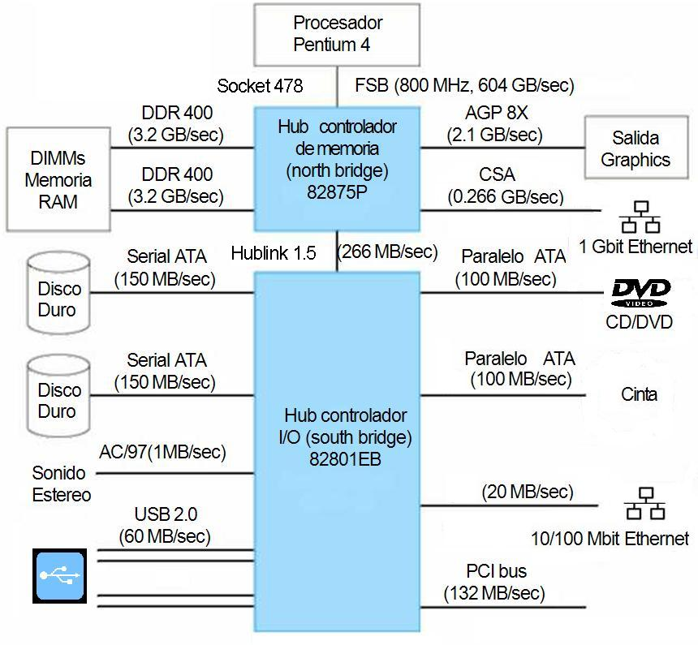

Un chipset (traducido como circuito integrado auxiliar) es el conjunto de circuitos integrados diseñados con base en la arquitectura de un procesador (en algunos casos, diseñados como parte integral de esa arquitectura), permitiendo que ese tipo de procesadores funcionen en una placa base. Sirven de puente de comunicación con el resto de componentes de la placa, como son la memoria, las tarjetas de expansión, los puertos USB, ratón, teclado, etc.
Las placas base modernas suelen incluir dos integrados, denominados puente norte y puente sur, y suelen ser los circuitos integrados más grandes después de la GPU y el microprocesador. Las últimas placas base carecen de puente norte, ya que los procesadores de última generación lo llevan integrado.
El chipset determina muchas de las características de una placa madre y por lo general la referencia de la misma está relacionada con la del chip-set.
A diferencia del microcontrolador, el procesador no tiene mayor funcionalidad sin el soporte de un chip-set: la importancia del mismo ha sido relegada a un segundo plano por las estrategias de mercadotecnia.
En el caso de los computadores PC, es un esquema de arquitectura abierta que establece modularidad: el Chip-set debe tener interfaces estándar para los demás dispositivos. Esto permite escoger entre varios dispositivos estándar, por ejemplo en el caso de los buses de expansión, algunas tarjetas madre pueden tener bus PCI-Express y soportar diversos tipos de tarjetas de distintos anchos de bus (1x, 8x, 16x).
En el caso de equipos portátiles o de marca, el chip-set puede ser diseñado a la medida y aunque no soporte gran variedad de tecnologías, presentará alguna interfaz de dispositivo.
La terminología de los integrados ha cambiado desde que se creó el concepto del chip-set a principio de los años 1990, pero todavía existe equivalencia haciendo algunas aclaraciones: